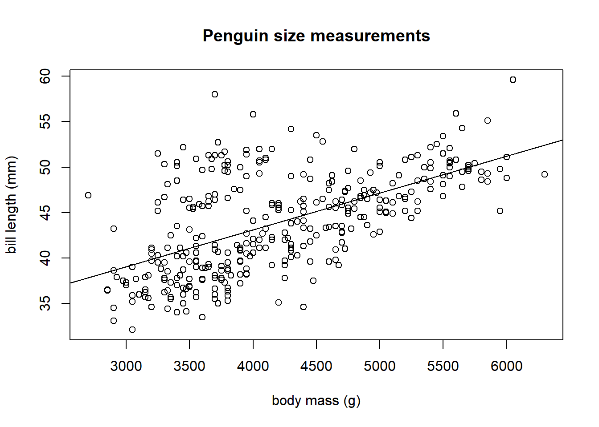

Chapter 6 Linear model estimation
6.1 A simple motivating example
Suppose you observe data related to the heights of 5 mothers and their adult daughters. The observed heights (measured in inches) are provided in Table 6.1.
| observation | mother’s height (in) | daughter’s height (in) |
|---|---|---|
| 1 | 57.5 | 61.5 |
| 2 | 60.5 | 63.5 |
| 3 | 63.5 | 63.5 |
| 4 | 66.5 | 66.5 |
| 5 | 69.5 | 66.5 |
The 5 pairs of observed data are denoted \[(x_1, Y_1), (x_2, Y_2), \ldots, (x_5, Y_5),\] with \((x_i, Y_i)\) denoting the data for observation \(i\). \(x_i\) denotes the mother’s height for observation \(i\) and \(Y_i\) denotes the daughter’s height for observation \(i\). In this data set, e.g., \(x_3 = 63.5\) and \(Y_5= 66.5\).
Figure 6.1 displays a scatter plot of height data provided in Table 6.1. The relationship between the points is approximately a straight line. Thus, we will model the typical (mean) relationship between the height of mothers and their adult daughters as a straight line.
Figure 6.1: A scatter plot displaying pairs of heights for a mother and her adult daughter.
The \(x_1,x_2,\ldots,x_5\) are observed values of a random variable \(X\), while \(Y_1, Y_2, \ldots, Y_5\) are observed values of a random variable \(Y\). Thus, \(X\) denotes the height a mother and \(Y\) denotes the height of (one of) their adult daughter(s). We want to model variable \(Y\) using variable \(X\). The variable we are trying to model is known as the response variable. The variables we use to model the response are known as regressor variables. Response variables are also known as outcome, output, or dependent variables. Regressor variables are also known as explanatory, predictor, input, dependent, or feature variables.
A regression model describes the typical relationship between the response variable \(Y\) as a function of the regressor variable \(X\). More formally, the regression model for \(Y\) as a function of \(X\), denoted \(E(Y|X)\) is the expected value of \(Y\) conditional on the regressor \(X\). The regression model specifically refers to the expected relationship between the response and regressors.
A simple linear regression model assumes the regression model between \(Y\) and \(X\) is a straight line using the equation \[E(Y\mid X)=\beta_0 + \beta_1 X.\] \(\beta_0\) and \(\beta_1\) are the intercept and slope of our regression functions. In general, \(\beta_0\) and \(\beta_1\) are known as regression coefficients and are model parameters that we estimate from our data.
The estimated regression model is denoted by \[\hat{E}(Y|X)=\hat{\beta}_0 + \hat{\beta}_1 X,\] where \(\hat{\beta}_0\) and \(\hat{\beta}_1\) are values of \(\beta_0\) and \(\beta_1\) that we estimate from the data. A \(\hat{}\) above a term indicates it is an estimate. We will refer to \(\hat{E}(Y|X)\) as the fitted model or estimated regression model.
How do we determine the “best fitting” model? Consider Figure 6.2, in which 2 potential “best fitting” models are drawn on the scatter plot of the height data. Which one is best?
Figure 6.2: Comparison of three potential fitted models to some observed data. The fitted models are shown in grey.
The rest of this chapter focuses on defining and estimating the parameters of a linear regression model.
6.2 Defining a linear model
6.2.1 Necessary components and notation
We begin by defining notation for the components of a linear model and some of their important properties. We repeat some of the previous discussion for clarity.
\(Y\) denotes the response variable.
- The response variable is treated as a random variable.
- We will observe realizations of this random variable for each observation in our data set.
\(X\) denotes a single regressor variable. \(X_1\), \(X_2\), , \(X_{p-1}\) denote distinct regressor variables if we are performing multiple regression.
- The regressor variables are treated as non-random variables.
- The observed values of the regressor variables are treated as fixed, known values.
\(\mathbb{X}=\{X_1,\ldots,X_{p-1}\}\) denotes the collection of all regressors under consideration, though this notation is really only needed in the context of multiple regression.
\(\beta_0\), \(\beta_1\), \(\ldots\), \(\beta_{p-1}\) denote regression coefficients.
- Regression coefficients are statistical parameters that we will estimate from our data.
- The regression coefficients are treated as fixed (non-random) but unknown values.
- Regression coefficients are not observable.
\(\epsilon\) denotes model error.
- The model error is more accurately described as random variation of each observation from the regression model \(E(\epsilon\mid\mathbb{X})\).
- The error is treated as a random variable.
- The error is assumed to have mean 0 for all values of the regressors, i.e., \(E(\epsilon\mid\mathbb{X}) = 0\).
- The variance of the errors is assumed to be a constant value for all values of the regressors, i.e., \(\mathrm{var}(\epsilon\mid\mathbb{X})=\sigma^2\).
- The error is never observable (except in the context of a simulation study where the experimenter literally defines the true model).
6.2.2 Standard definition of linear model
A linear model for \(Y\) is defined by the equation \[\begin{align} Y &= \beta_0 + \beta_1 X_1 + \beta_2 X_2 + \cdots + \beta_{p-1} X_{p-1} + \epsilon \\ &= E(Y \mid \mathbb{X}) + \epsilon \tag{5.1} \end{align}\]
We write the model using the form in Equation (5.1) to emphasize the fact the response value equals the expected response for that combination of regressor values plus some error. It should be clear from comparing Equation (5.1) with the previous line that \[E(Y \mid \mathbb{X}) = \beta_0 + \beta_1 X_1 + \beta_2 X_2 + \cdots + \beta_{p-1} X_{p-1},\] which we will prove later.
More generally, one can say that a regression model is linear if the mean function can be written as a linear combination of the regression coefficients and known values created from our regressor variables, i.e., \[\begin{equation} E(Y \mid X_1, X_2, \ldots, X_{p-1}) = \sum_{j=0}^{p-1} c_j \beta_j, \tag{6.1} \end{equation}\] where \(c_0, c_1, \ldots, c_{p-1}\) are known functions of the regressor variables, e.g., \(c_1 = X_1 X_2 X_3\), \(c_3 = X_2^2\), \(c_8 = \ln(X_1)/X_2^2\), etc. Thus, if \(g_0,\ldots,g_{p-1}\) are functions of \(\mathbb{X}\), then we can say that the regression model is linear if it can be written as \[E(Y\mid \mathbb{X}) = \sum_{j=0}^{p-1} g_j(\mathbb{X})\beta_j.\]
Some examples of linear regression models:
- \(E(Y|X) = \beta_0\).
- \(E(Y|X) = \beta_0 + +\beta_1 X + \beta_2 X^2\).
- \(E(Y|X_1, X_2) = \beta_0 + \beta_1 X_1 + \beta_2 X_2\).
- \(E(Y|X_1, X_2) = \beta_0 + \beta_1 X_1 + \beta_2 X_2 + \beta_3 X_1 X_2\).
- \(E(Y|X_1, X_2) = \beta_0 + \beta_1 \ln(X_1) + \beta_2 X_2^{-1}\).
- \(E(\ln(Y)|X_1, X_2) = \beta_0 + \beta_1 X_1 + \beta_2 X_2\).
- \(E(Y^{-1}|X_1, X_2) = \beta_0 + \beta_1 X_1 + \beta_2 X_2\).
Some examples of non-linear regression models:
- \(E(Y|X) = \beta_0 + e^{\beta_1 X}\).
- \(E(Y|X) = \beta_0 + \beta_1 X/(\beta_2 + X)\).
The latter regression models are non-linear models because there is no way to express them using the expression in Equation (6.1).
There are many different methods of parameter estimation in statistics: method-of-moments, maximum likelihood, Bayesian, etc. The most common parameter estimation method for linear models is the least squares method, which is commonly called Ordinary Least Squares (OLS) estimation. OLS estimation estimates the regression coefficients with the values that minimize the residual sum of squares (RSS), which we will define shortly.
6.3 Estimation of the simple linear regression model
6.3.1 Fitted values, residuals, and RSS
Recall that a simple linear regression model is defined by the equation \[Y = \beta_0 + \beta_1 X + \epsilon = E(Y|X) + \epsilon\] where \[E(Y|X) = \beta_0 + \beta_1 X.\] In a simple linear regression context, we have \(n\) observed responses \(Y_1,Y_2,\ldots,Y_n\) and \(n\) regressor values \(x_1,x_2,\ldots,x_n\).
Let \(\hat{\beta}_j\) denote the estimated value of \(\beta_j\) and \(\hat{E}(Y|X) = \hat{\beta}_0 + \hat{\beta}_1 X\) denote the estimated regression model.
The \(i\)th fitted value is defined as \[\begin{equation} \hat{Y}_i = \hat{E}(Y|X = x_i) = \hat{\beta}_0 + \hat{\beta}_1 x_i. \tag{6.2} \end{equation}\] Thus, the \(i\)th fitted value is the estimated mean of \(Y\) when the regressor \(X=x_i\). More specifically, the \(i\)th fitted value is the estimated mean response for the combination of regressor values observed for the \(i\)th observation.
The \(i\)th residual is defined as \[\begin{equation} \hat{\epsilon}_i = Y_i - \hat{Y}_i. \tag{6.3} \end{equation}\] The \(i\)th residual is the difference between the response and estimated mean response of observation \(i\).
The RSS of a regression model is the sum of its squared residuals.
The RSS for a simple linear regression model, as a function of the estimated regression coefficients \(\hat{\beta}_0\) and \(\hat{\beta}_1\), is defined as \[\begin{equation} RSS(\hat{\beta}_0, \hat{\beta}_1) = \sum_{i=1}^n \hat{\epsilon}_i^2. \tag{6.4} \end{equation}\]
Using several of objects defined above, there are many equivalent expressions for the RSS. Notably, Equation (6.4) can be rewritten using Equations (6.3) and (6.2) as \[\begin{align*} RSS(\hat{\beta}_0, \hat{\beta}_1) &= \sum_{i=1}^n \hat{\epsilon}_i^2 \\ &= \sum_{i=1}^n (Y_i - \hat{Y}_i)^2 & \\ &= \sum_{i=1}^n (Y_i - \hat{E}(Y|X=x_i))^2 \\ &= \sum_{i=1}^n (Y_i - (\hat{\beta}_0 + \hat{\beta}_1 x_i))^2. \end{align*}\]
The fitted model is the estimated model that minimizes the RSS, i.e., the fitted model (in the context of simple linear regression) is defined as \[\begin{equation} \hat{E}(Y|X) = \hat{\beta}_0 + \hat{\beta}_1 X. \tag{6.5} \end{equation}\] In a simple linear regression context, the fitted model is known as the line of best fit.
In Figure 6.3, we visualize the response values, fitted values, residuals, and fitted model in a simple linear regression context. Note that:
- The fitted model is shown as the dashed grey line and minimizes the RSS.
- The fitted values, shown as blue x’s, are the values returned by evaluating the fitted model at the observed regressor values.
- The residuals, shown as solid orange lines, indicate the distance and direction between the observed responses and their corresponding fitted value. If the response is larger than the fitted value then the residual is positive, otherwise it is negative.
- The RSS is the sum of the squared vertical distances between the response and fitted values.
Figure 6.3: Visualization of the response values, fitted values, residuals, and fitted model.
6.3.2 OLS estimators of the simple linear regression parameters
The estimates of \(\beta_0\) and \(\beta_1\) that minimize the RSS for a simple linear regression model can be obtained analytically using basic calculus under minimal assumptions. Specifically, the optimal analytical solutions for \(\hat{\beta}_0\) and \(\hat{\beta}_1\) are valid as long as the regressor values are not a constant value, i.e, \(x_i \neq x_j\) for at least some \(i,j\in \{1,2,\ldots,n\}\).
Define \(\bar{x}=\frac{1}{n}\sum_{i=1}^n x_i\) and \(\bar{Y} = \frac{1}{n}\sum_{i=1}^n Y_i\). The OLS estimators of the simple linear regression coefficients are
\[\begin{align} \hat{\beta}_1 &= \frac{\sum_{i=1}^n x_i Y_i - \frac{1}{n} \biggl(\sum_{i=1}^n x_i\biggr)\biggl(\sum_{i=1}^n Y_i\biggr)}{\sum_{i=1}^n x_i^2 - \frac{1}{n} \biggl(\sum_{i=1}^n x_i\biggr)^2} \notag \\ &= \frac{\sum_{i=1}^n (x_i - \bar{x})(Y_i - \bar{Y})}{\sum_{i=1}^n (x_i - \bar{x})^2} \notag \\ &= \frac{\sum_{i=1}^n (x_i - \bar{x})Y_i}{\sum_{i=1}^n (x_i - \bar{x})x_i} \tag{6.6} \end{align}\] and \[\begin{equation} \hat{\beta}_0 = \bar{Y} - \hat{\beta}_1 \bar{x}. \tag{6.7} \end{equation}\]
We emphasize once again that the OLS estimators of \(\beta_0\) and \(\beta_1\) are the estimators that minimize the RSS.
In edition to the regression coefficients, the other parameter we discussed (in Section 6.2.1) is the error variance, \(\sigma^2\). The most common estimator of the error variance is \[\begin{equation} \hat{\sigma}^2 = \frac{RSS}{n-p}, \tag{6.8} \end{equation}\] where \(p\) is the number of regression coefficients. In general, \(n-p\) is the degrees of freedom of the RSS. In a simple linear regression context, the denominator of Equation (6.8) is \(n-2\).
6.4 Penguins simple linear regression example
We will use the penguins data set in the palmerpenguins package
(Horst, Hill, and Gorman 2020) to illustrate a very basic simple linear regression
analysis.
The penguins data set provides data related to various penguin species
measured in the Palmer Archipelago (Antarctica), originally provided by
Gorman, Williams, and Fraser (2014). We start by loading the data into memory.
data(penguins, package = "palmerpenguins")The data set includes 344 observations of 8 variables. The variables are:
species: afactorindicating the penguin speciesisland: afactorindicating the island the penguin was observedbill_length_mm: anumericvariable indicating the bill length in millimetersbill_depth_mm: anumericvariable indicating the bill depth in millimetersflipper_length_mm: anintegervariable indicating the flipper length in millimetersbody_mass_g: anintegervariable indicating the body mass in gramssex: afactorindicating the penguin sex (female,male)year: an integer denoting the study year the penguin was observed (2007,2008, or2009)
We begin by creating a scatter plot of bill_length_mm versus
body_mass_g (y-axis versus x-axis) in Figure 6.4.
We see a clear positive association between body mass and bill length:
as the body mass increases, the bill length tends to increase. The
pattern is linear, i.e., roughly a straight line.
plot(bill_length_mm ~ body_mass_g, data = penguins,
ylab = "bill length (mm)", xlab = "body mass (g)",
main = "Penguin size measurements")Figure 6.4: A scatter plot of penguin bill length (mm) versus body mass (g)
We first perform a single linear regression analysis manually using the
equations previously provided by regressing bill_length_mm on
body_mass_g.
Using the summary function on the penguins data frame, we see that
both bill_length_mm and body_mass_g have NA values.
summary(penguins)
#> species island bill_length_mm bill_depth_mm
#> Adelie :152 Biscoe :168 Min. :32.10 Min. :13.10
#> Chinstrap: 68 Dream :124 1st Qu.:39.23 1st Qu.:15.60
#> Gentoo :124 Torgersen: 52 Median :44.45 Median :17.30
#> Mean :43.92 Mean :17.15
#> 3rd Qu.:48.50 3rd Qu.:18.70
#> Max. :59.60 Max. :21.50
#> NA's :2 NA's :2
#> flipper_length_mm body_mass_g sex year
#> Min. :172.0 Min. :2700 female:165 Min. :2007
#> 1st Qu.:190.0 1st Qu.:3550 male :168 1st Qu.:2007
#> Median :197.0 Median :4050 NA's : 11 Median :2008
#> Mean :200.9 Mean :4202 Mean :2008
#> 3rd Qu.:213.0 3rd Qu.:4750 3rd Qu.:2009
#> Max. :231.0 Max. :6300 Max. :2009
#> NA's :2 NA's :2We want to remove the rows of penguins where either body_mass_g or
bill_length_mm have NA values. We do that below using the na.omit
function (selecting only the relevant variables) and assign the cleaned
object the name penguins_clean.
# remove rows of penguins where bill_length_mm or body_mass_g have NA values
penguins_clean <- na.omit(penguins[,c("bill_length_mm", "body_mass_g")])We extract the bill_length_mm variable from the penguins data frame
and assign it the name y since it will be the response variable. We
extract the body_mass_g variable from the penguins data frame and
assign it the name y since it will be the predictor variable. We also
determine the number of observations and assign that value the name n.
# extract response and predictor from penguins_clean
y <- penguins_clean$bill_length_mm
x <- penguins_clean$body_mass_g
# determine number of observations
n <- length(y)We now compute \(\hat{\beta}_1\) and \(\hat{\beta}_0\). Note that placing
() around the assignment operations will both perform the assign and
print the results.
# compute OLS estimates of beta1 and beta0
(b1 <- (sum(x * y) - sum(x) * sum(y) / n)/(sum(x^2) - sum(x)^2/n))
#> [1] 0.004051417
(b0 <- mean(y) - b1 * mean(x))
#> [1] 26.89887The estimated value of \(\beta_0\) is \(\hat{\beta}_0=26.90\) and the estimated value of \(\beta_1\) is \(\hat{\beta}_1=0.004\). The basic mathematical interpretation of our results is that:
- (\(\hat{\beta}_1\)): If a penguin has a body mass 1 gram larger than another penguin, we expect the larger penguins bill length to be 0.004 millimeters longer.
- (\(\hat{\beta}_0\)):A penguin with a body mass of 0 grams is expected to have a bill length of 26.9 millimeters.
The latter interpretation is clearly non-sensical and is caused by the fact that we are extrapolating far outside the observed body mass values. The relationship between body mass and bill length is different for penguin chicks versus adults.
We can use the abline function to overlay the fitted model on the
observed data. Note that in simple linear regression, \(\hat{\beta}_1\)
corresponds to the slope of the fitted line and \(\hat{\beta}_0\) will be
the intercept.
plot(bill_length_mm ~ body_mass_g, data = penguins,
ylab = "bill length (mm)", xlab = "body mass (g)",
main = "Penguin size measurements")
# a is the intercept and b is the slope
abline(a = b0, b = b1)
The fit of the model to our observed data seems reasonable.
We can also compute the residuals, \(\hat{\epsilon}_1,\ldots,\hat{\epsilon}_n\), the fitted values \(\hat{y}_1,\ldots,\hat{y}_n\), and the associated RSS, \(RSS=\sum_{i=1}^n \hat{\epsilon}_i^2\).
yhat <- b0 + b1 * x # compute fitted values
ehat <- y - yhat # compute residuals
(rss <- sum(ehat^2)) # sum of the squared residuals
#> [1] 6564.494
(sigmasqhat <- rss/(n-2)) # estimated error variance
#> [1] 19.307346.5 Estimation of the multiple linear regression coefficients)
We now consider the context where we want to estimate the parameters of a linear model with 1 or more regressors, i.e., when \[Y=\beta_0 + \beta_1 X_1 + \cdots + \beta_{p-1} X_{p-1} + \epsilon.\]
The multiple linear regression model relating the responses, the regressors, and the errors for all \(n\) observations is defined by the system of equations \[\begin{equation} Y_i = \beta_0 + \beta_1 x_{i,1} + \beta_2 x_{i,2} + \cdots + \beta_{p-1} x_{i,p-1} + \epsilon_i,\quad i=1,2,\ldots,n. \tag{5.2} \end{equation}\]
6.5.1 Using matrix notation to represent a linear model
To simplify estimation of the regression coefficients in a linear regression model, we must use matrix notation to describe the system of equation defining our linear model.
We define the following notation:
- \(\mathbf{y} = [Y_1, Y_2, \ldots, Y_n]\) denotes the column vector containing the \(n\) responses.
- \(\mathbf{X}\) denotes the matrix containing a column of 1s and the observed regressor values, specifically, \[\mathbf{X} = \begin{bmatrix} 1 & x_{1,1} & x_{1,2} & \cdots & x_{1,p-1} \\ 1 & x_{2,1} & x_{2,2} & \cdots & x_{2,p-1} \\ \vdots & \vdots & \vdots & \vdots & \vdots \\ 1 & x_{n,1} & x_{n,2} & \cdots & x_{n,p-1} \end{bmatrix}.\]
- \(\boldsymbol{\beta} = [\beta_0, \beta_1, \ldots, \beta_{p-1}]\) denotes the column vector containing the \(p\) regression coefficients.
- \(\boldsymbol{\epsilon} = [\epsilon_1, \epsilon_2, \ldots, \epsilon_n]\) denotes the column vector contained the \(n\) errors.
Then the system of equations defining the linear model in (5.2) can be written as \[\mathbf{y} = \mathbf{X}\boldsymbol{\beta} + \boldsymbol{\epsilon}.\] Thus, a linear model can be represented as a system of linear equations using matrices. A model that cannot be represented as a system of linear equations using matrices is not a linear model.
6.5.2 Residuals, fitted values, and RSS for multiple linear regression
We proceed with discussion of residuals, fitted values, and RSS for the multiple linear regression context using matrix notation.
The vector of estimated values for the coefficients contained in \(\boldsymbol{\beta}\) is denoted by \[\begin{equation} \hat{\boldsymbol{\beta}}=[\hat{\beta}_0,\hat{\beta}_1,\ldots,\hat{\beta}_{p-1}]. \tag{6.9} \end{equation}\]
The vector of regressor values for the \(i\)th observation is denoted by \[\begin{equation} \mathbf{x}_i=[1,x_{i,1},\ldots,x_{i,p-1}], \tag{6.10} \end{equation}\] where the 1 is needed to account for the intercept in our model.
Extending the original definition of a fitted value in Equation (6.2), the \(i\)th fitted value in the context of multiple linear regression is defined as \[\begin{align} \hat{Y}_i &= \hat{E}(Y|\mathbb{X} = \mathbf{x}_i) \notag \\ &= \hat{\beta}_0 + \hat{\beta}_1 x_{i,1} + \cdots + \hat{\beta}_{p-1} x_{i,p-1} \notag \\ &= \mathbf{x}_i^T\hat{\boldsymbol{\beta}}. \tag{6.11} \end{align}\]
The (column) vector of fitted values is defined as \[\begin{equation} \hat{\mathbf{y}} = [\hat{Y}_1,\ldots,\hat{Y}_n]. \tag{6.12} \end{equation}\]
Extending the original definition of a residual in Equation (6.3), the \(i\)th residual in the context of multiple linear regression can be written as \[\begin{align} \hat{\epsilon}_i = Y_i - \hat{Y}_i=Y_i-\mathbf{x}_i^T\hat{\boldsymbol{\beta}}, \end{equation} using Equation \@ref(eq:def-fitted-value-matrix). The RSS for a simple linear regression model, as a function of the estimated regression coefficients, is \begin{align*} RSS(\hat{\beta}_0, \hat{\beta}_1) &= \sum_{i=1}^n \hat{\epsilon}_i^2 \\ &= \sum_{i=1}^n (Y_i - \hat{Y}_i)^2 \\ &= \sum_{i=1}^n (Y_i - \hat{E}(Y|X=x_i))^2 \\ &= \sum_{i=1}^n (Y_i - (\hat{\beta}_0 + \hat{\beta}_1 x_i))^2. \end{align*} ### OLS estimator of the linear model parameters The OLS estimator of the regression coefficient vector, $\boldsymbol{\beta}$, is ```{=tex} \begin{equation} \hat{\boldsymbol{\beta}} = (\mathbf{X}^T\mathbf{X})^{-1}\mathbf{X}^T\mathbf{y}, \tag{6.13} \end{equation} ``` ## Penguins multiple linear regression example {#s:penguins-mlr} The data set includes 344 observations of 8 variables. The variables are: - `species`: a `factor` indicating the penguin species - `island`: a `factor` indicating the island the penguin was observed - `bill_length_mm`: a `numeric` variable indicating the bill length in millimeters - `bill_depth_mm`: a `numeric` variable indicating the bill depth in millimeters - `flipper_length_mm`: an `integer` variable indicating the flipper length in millimeters - `body_mass_g`: an `integer` variable indicating the body mass in grams - `sex`: a `factor` indicating the penguin sex (`female`, `male`) - `year`: an integer denoting the study year the penguin was observed (`2007`, `2008`, or `2009`) ```r mlmod <- lm(bill_length_mm ~ body_mass_g + flipper_length_mm, data = penguins) summary(mlmod) #> #> Call: #> lm(formula = bill_length_mm ~ body_mass_g + flipper_length_mm, #> data = penguins) #> #> Residuals: #> Min 1Q Median 3Q Max #> -8.8064 -2.5898 -0.7053 1.9911 18.8288 #> #> Coefficients: #> Estimate Std. Error t value Pr(>|t|) #> (Intercept) -3.4366939 4.5805532 -0.750 0.454 #> body_mass_g 0.0006622 0.0005672 1.168 0.244 #> flipper_length_mm 0.2218655 0.0323484 6.859 3.31e-11 *** #> --- #> Signif. codes: 0 '***' 0.001 '**' 0.01 '*' 0.05 '.' 0.1 ' ' 1 #> #> Residual standard error: 4.124 on 339 degrees of freedom #> (2 observations deleted due to missingness) #> Multiple R-squared: 0.4329, Adjusted R-squared: 0.4295 #> F-statistic: 129.4 on 2 and 339 DF, p-value: < 2.2e-16 ``` ## Categorical predictors ## Penguins multiple linear regression example with categorical predictor {#s:penguins-mlr} ```r library(ggplot2) ggplot(data = penguins) + geom_point(aes(x = body_mass_g, y = bill_length_mm, col = species)) #> Warning: Removed 2 rows containing missing values (geom_point). ``` <img src="Data-Analysis-with-Linear-Regression_files/figure-html/unnamed-chunk-55-1.png" width="672" /> ```r lmodb <- lm(bill_length_mm ~ body_mass_g + species + body_mass_g:species, data = penguins) summary(lmodb) #> #> Call: #> lm(formula = bill_length_mm ~ body_mass_g + species + body_mass_g:species, #> data = penguins) #> #> Residuals: #> Min 1Q Median 3Q Max #> -6.4208 -1.6461 0.0919 1.4718 9.3138 #> #> Coefficients: #> Estimate Std. Error t value Pr(>|t|) #> (Intercept) 26.9941391 1.5926015 16.950 < 2e-16 *** #> body_mass_g 0.0031879 0.0004271 7.464 7.27e-13 *** #> speciesChinstrap 5.1800537 3.2746719 1.582 0.115 #> speciesGentoo -0.2545907 2.7138655 -0.094 0.925 #> body_mass_g:speciesChinstrap 0.0012748 0.0008740 1.459 0.146 #> body_mass_g:speciesGentoo 0.0009030 0.0006066 1.489 0.138 #> --- #> Signif. codes: 0 '***' 0.001 '**' 0.01 '*' 0.05 '.' 0.1 ' ' 1 #> #> Residual standard error: 2.399 on 336 degrees of freedom #> (2 observations deleted due to missingness) #> Multiple R-squared: 0.8098, Adjusted R-squared: 0.807 #> F-statistic: 286.1 on 5 and 336 DF, p-value: < 2.2e-16 ``` ```r lmodc <- lm(bill_length_mm ~ body_mass_g*species, data = penguins) coefficients(lmodb) #> (Intercept) body_mass_g #> 26.9941391367 0.0031878758 #> speciesChinstrap speciesGentoo #> 5.1800537287 -0.2545906615 #> body_mass_g:speciesChinstrap body_mass_g:speciesGentoo #> 0.0012748183 0.0009029956 coefficients(lmodc) #> (Intercept) body_mass_g #> 26.9941391367 0.0031878758 #> speciesChinstrap speciesGentoo #> 5.1800537287 -0.2545906615 #> body_mass_g:speciesChinstrap body_mass_g:speciesGentoo #> 0.0012748183 0.0009029956 ``` ## Evaluating model fit ## Summary of notation ## Summary of functions used in this chapter ## Summarizing the components of a linear model We have already introduced a lot of objects. To aid in making sense of their notation, their purpose in the model, whether they can be observed, and whether they are modeled as a random variable (vector) or fixed, non-random values, we summarize things below. We've already talked about observing the response variable and the predictor variables. So these objects are observable. However, we have no way to measure the regression coefficients or the error. These are not observable. On the other hand, we treat the response variable as a random variable. Perhaps surprisingly, we treated the predictor variables as a fixed, non-random variables. The regression coefficients are treated as fixed, non-random but unknown values. This is standard for parameters in a statistical model. The errors are also treated as random variables. In fact, since both the predictor variables and the regression coefficients are non-random, the only way for the response to be a random variable based on Equation \@ref(eq:lmSystem) is for the errors to be random. We summarize this information in the table below for the objects previously discussed using the various notations introduced. +-----------------+-----------------+-----------------+-----------------+ | Notation | Description | Observable | Random | +=================+=================+=================+=================+ | $Y$ | response | Yes | Yes | | | variable | | | +-----------------+-----------------+-----------------+-----------------+ | $Y_i$ | response value | Yes | Yes | | | for the $i$th | | | | | observation | | | +-----------------+-----------------+-----------------+-----------------+ | $\mathbf{y}$ | the $n\times 1$ | Yes | Yes | | | column vector | | | | | of response | | | | | values | | | +-----------------+-----------------+-----------------+-----------------+ | $X$ | regressor | Yes | No | | | variable | | | +-----------------+-----------------+-----------------+-----------------+ | $X_j$ | the $j$th | Yes | No | | | regressor | | | | | variable | | | +-----------------+-----------------+-----------------+-----------------+ | $x_{i,j}$ | the value of | Yes | No | | | the $j$th | | | | | regressor | | | | | variable for | | | | | the $i$th | | | | | observation | | | +-----------------+-----------------+-----------------+-----------------+ | $\mathbf{X}$ | the $n\times p$ | Yes | No | | | matrix of | | | | | regressor | | | | | values | | | +-----------------+-----------------+-----------------+-----------------+ | $\beta_j$ | the regression | No | No | | | coefficient | | | | | associated with | | | | | the $j$th | | | | | regressor | | | | | variable | | | +-----------------+-----------------+-----------------+-----------------+ | $\boldsymbol{\beta}$| the $p\times 1$ | No | No | | | column vector | | | | | of regression | | | | | coefficients | | | +-----------------+-----------------+-----------------+-----------------+ | $\epsilon$ | the error | No | Yes | +-----------------+-----------------+-----------------+-----------------+ | $\epsilon_i$ | the error | No | Yes | | | associated with | | | | | observation $i$ | | | +-----------------+-----------------+-----------------+-----------------+ ## Going Deeper ### Manually estimating the simple linear regression coefficients In this section we will manually perform the Penguins simple linear regression analysis provided in Section \@ref{s:penguins-slr}. Recall that the `penguins` data frame in the **palmerpenguins* package contained the variables: * `bill_length_mm`: a `numeric` variable indicating the bill length in millimeters * `body_mass_g`: an `integer` variable indicating the body mass in grams We will use formulas for $\hat{\beta}_0$ and $\hat{\beta}_1$ in Equations \@ref\tag{6.6} and \@ref\tag{6.7} to manually compute the estimated regression coefficients for the simple linear regression model when regressing `bill_length_mm` on `body_mass_g`. We first load the `penguins` data frame. We then select the `bill_length_mm` and `body_mass_g` variables of the data frame and use the pipe operator to pass the simplified data frame to the `summary` function. ```r data(penguins, package = "palmerpenguins") # load data penguins[,c("bill_length_mm", "body_mass_g")] |> summary() # simplify and summarize #> bill_length_mm body_mass_g #> Min. :32.10 Min. :2700 #> 1st Qu.:39.23 1st Qu.:3550 #> Median :44.45 Median :4050 #> Mean :43.92 Mean :4202 #> 3rd Qu.:48.50 3rd Qu.:4750 #> Max. :59.60 Max. :6300 #> NA's :2 NA's :2 ``` Both `bill_length_mm` and `body_mass_g` have `NA` values that will poison our calculations if we naively use those variables in our calculations, so we must remove them prior to calculation. The `na.omit` function attempts to handle missing values in R objects. The `penguins` data frame has class `data.frame`. For a `data.frame`, `na.omit` will remove any rows that have `NA` values. Note that if you are only concerned with the `NA` values for certain variables of a data frame then you should apply the `na.omit` to the data frame containing only those variables, otherwise `na.omit` may remove rows unnecessarily because a different variable has an `NA` value. Compare the dimensions of the results when we apply `na.omit` to `penguins` versus `penguins` with only `bill_length_mm` and `body_mass_g`. ```r penguins |> na.omit() |> dim() # dimensions penguins after filtering rows with NA #> [1] 333 8 penguins[,c("bill_length_mm", "body_mass_g")] |> na.omit() |> dim() #> [1] 342 2 ``` The data frame obtained after applying `na.omit` to the `penguins` data frame has only 333 rows, while the data frame obtained by applying `na.omit` to only the `bill_length_mm` and `body_mass_g` columns of `penguins` has 342 rows. This is because some of the other variables in `penguins` have `NA` values in rows that the `bill_length_mm` and `body_mass_g` columns do not, so the `na.omit` function must remove additional rows. Continuing our analysis, we create a new data frame, `penguins_clean`, that is obtained by selecting the `bill_length_mm` and `body_mass_g` variables of `penguins` and then using the `na.omit` function to retain only the rows without `NA` values. ```r # remove rows of penguins where bill_length_mm or body_mass_g have NA values penguins_clean <- na.omit(penguins[,c("bill_length_mm", "body_mass_g")]) ``` We extract the `bill_length_mm` variable from the `penguins_clean` data frame and assign it the name `y` since it will be the response variable. We extract the `body_mass_g` variable from the `penguins` data frame and assign it the name `x` since it will be the regressor variable. We also determine the number of observations and assign that value the name `n`. ```r # extract response and regressor from penguins_clean y <- penguins_clean$bill_length_mm x <- penguins_clean$body_mass_g # determine number of observations n <- length(y) ``` We now compute $\hat{\beta}_1$ and $\hat{\beta}_0$ using the formulas in Equations \@ref\tag{6.6} and \@ref\tag{6.7}, respectively. Note that placing `()` around the assignment operations will both perform the assignment and print the results. ```r # compute OLS estimates of beta1 and beta0 (b1 <- (sum(x * y) - sum(x) * sum(y) / n)/(sum(x^2) - sum(x)^2/n)) #> [1] 0.004051417 (b0 <- mean(y) - b1 * mean(x)) #> [1] 26.89887 ``` The estimated value of $\beta_0$ is $\hat{\beta}_0=$0 and the estimated value of $\beta_1$ is $\hat{\beta}_1=0.004$. The basic mathematical interpretation of our results is that: - $\hat{\beta}_1$: If a penguin has a body mass 1 gram larger than another penguin, we expect the larger penguins bill length to be 0.004 millimeters longer. - $\hat{\beta}_0$:A penguin with a body mass of 0 grams is expected to have a bill length of 26.9 millimeters. The latter interpretation is clearly non-sensical and is caused by the fact that we are extrapolating far outside the observed body mass values. The relationship between body mass and bill length is different for penguin chicks versus adults. We can use the `abline` function to overlay the fitted model on the observed data. Note that in simple linear regression, $\hat{\beta}_1$ corresponds to the slope of the fitted line and $\hat{\beta}_0$ will be the intercept. ```r plot(bill_length_mm ~ body_mass_g, data = penguins, ylab = "bill length (mm)", xlab = "body mass (g)", main = "Penguin size measurements") # a is the intercept and b is the slope abline(a = b0, b = b1) ``` <img src="Data-Analysis-with-Linear-Regression_files/figure-html/unnamed-chunk-63-1.png" width="672" /> The fit of the model to our observed data seems reasonable. We can also compute the residuals, $\hat{\epsilon}_1,\ldots,\hat{\epsilon}_n$, the fitted values $\hat{y}_1,\ldots,\hat{y}_n$, and the associated RSS, $RSS=\sum_{i=1}^n \hat{\epsilon}_i^2$. ```r yhat <- b0 + b1 * x # compute fitted values ehat <- y - yhat # compute residuals (rss <- sum(ehat^2)) # sum of the squared residuals #> [1] 6564.494 (sigmasqhat <- rss/(n-2)) # estimated error variance #> [1] 19.30734 ``` ### Manually estimating the multiple linear regression coefficients ### Parameter estimation and matrix decompositions ### Updating a model ### More discussion of `formula` for model-building The models fit by, e.g., the lm and glm functions are specified in a compact symbolic form. The \~ operator is basic in the formation of such models. An expression of the form y \~ model is interpreted as a specification that the response y is modelled by a linear predictor specified symbolically by model. Such a model consists of a series of terms separated by + operators. The terms themselves consist of variable and factor names separated by : operators. Such a term is interpreted as the interaction of all the variables and factors appearing in the term. In addition to + and :, a number of other operators are useful in model formulae. The \* operator denotes factor crossing: a*b interpreted as a+b+a:b. The \^ operator indicates crossing to the specified degree. For example (a+b+c)\^2 is identical to (a+b+c)*(a+b+c) which in turn expands to a formula containing the main effects for a, b and c together with their second-order interactions. The %in% operator indicates that the terms on its left are nested within those on the right. For example a + b %in% a expands to the formula a + a:b. The - operator removes the specified terms, so that (a+b+c)\^2 - a:b is identical to a + b + c + b:c + a:c. It can also used to remove the intercept term: when fitting a linear model y \~ x - 1 specifies a line through the origin. A model with no intercept can be also specified as y \~ x + 0 or y \~ 0 + x. While formulae usually involve just variable and factor names, they can also involve arithmetic expressions. The formula log(y) \~ a + log(x) is quite legal. When such arithmetic expressions involve operators which are also used symbolically in model formulae, there can be confusion between arithmetic and symbolic operator use. To avoid this confusion, the function I() can be used to bracket those portions of a model formula where the operators are used in their arithmetic sense. For example, in the formula y \~ a + I(b+c), the term b+c is to be interpreted as the sum of b and c. Variable names can be quoted by backticks `like this` in formulae, although there is no guarantee that all code using formulae will accept such non-syntactic names. Most model-fitting functions accept formulae with right-hand-side including the function offset to indicate terms with a fixed coefficient of one. Some functions accept other 'specials' such as strata or cluster (see the specials argument of terms.formula). There are two special interpretations of . in a formula. The usual one is in the context of a data argument of model fitting functions and means 'all columns not otherwise in the formula': see terms.formula. In the context of update.formula, only, it means 'what was previously in this part of the formula'. When formula is called on a fitted model object, either a specific method is used (such as that for class "nls") or the default method. The default first looks for a "formula" component of the object (and evaluates it), then a "terms" component, then a formula parameter of the call (and evaluates its value) and finally a "formula" attribute. There is a formula method for data frames. When there's "terms" attribute with a formula, e.g., for a model.frame(), that formula is returned. If you'd like the previous (R <= 3.5.x) behavior, use the auxiliary DF2formula() which does not consider a "terms" attribute. Otherwise, if there is only one column this forms the RHS with an empty LHS. For more columns, the first column is the LHS of the formula and the remaining columns separated by + form the RHS. <!--chapter:end:05-linear-model-estimation.Rmd--> --- title: "Joshua French" date: "2022-06-10" output: html_document: df_print: paged editor_options: markdown: wrap: 72 --- # Parameter estimation for linear models In this chapter we focus on estimating the parameters of a linear regression model. We also discuss important properties of the parameter estimators. To make the discussion easier to follow, we start by describing the *simple* linear regression model, which is a linear model with only a single predictor. <!-- Fitting a regression model is the same thing as estimating the parameters of a simple linear regression model. --> There are many different methods of parameter estimation in statistics: method-of-moments, maximum likelihood, Bayesian, etc. The most common parameter estimation method for linear models is **least squares method**, which is perhaps comonly called **Ordinary Least Squares (OLS)** estimation. OLS estimation estimates the regression coefficients with the values that minimize the residuals sum of squares (RSS), which we will define shortly. ## OLS estimation of the simple linear regression model In a simple linear regression context, we have $n$ observed responses $Y_1,Y_2,\ldots,Y_n$ and $n$ predictor values $x_1,x_2,\ldots,x_n$. Recall that for a simple linear regression model $$Y = \beta_0 + \beta_1 X + \epsilon = E(Y|X) + \epsilon$$ with $$E(Y|X) = \beta_0 + \beta_1 X.$$ We need to define some new notation and objects to define the RSS. Let $\hat{\beta}_j$ denote the estimated value of $\beta_j$ and the estimated mean response as a function of the predictor $X$ is $$\hat{E}(Y|X) = \hat{\beta}_0 + \hat{\beta}_1 X.$$ The $i$th fitted value is defined as $$\hat{Y}_i = \hat{E}(Y|X = x_i) = \hat{\beta}_0 + \hat{\beta}_1 x_i.$$ Thus, the $i$th fitted value is the estimated mean of $Y$ when the predictor $X=x_i$. More specifically, the $i$th fitted value is the estimated mean response of the $i$th observation. The $i$th residual is defined as $$\hat{\epsilon}_i = Y_i - \hat{Y}_i.$$ The $i$th residual is the difference between the response and estimated mean response of observation $i$. **The RSS of a regression model is the sum of its squared residuals**. The RSS for a simple linear regression model, as a function of the estimated regression coefficients, is \begin{align*} RSS(\hat{\beta}_0, \hat{\beta}_1) &= \sum_{i=1}^n \hat{\epsilon}_i^2 \\ &= \sum_{i=1}^n (Y_i - \hat{Y}_i)^2 \\ &= \sum_{i=1}^n (Y_i - \hat{E}(Y|X=x_i))^2 \\ &= \sum_{i=1}^n (Y_i - (\hat{\beta}_0 + \hat{\beta}_1 x_i))^2. \end{align*} The **fitted model** is the estimated model that minimizes the RSS. In a simple linear regression context, the fitted model is known as the **line of best fit**. In Figure \@ref(fig:rss-viz), we attempt to visualize the response values, fitted values, residuals, and line of best fit in a simple linear regression context. Notice that: - The fitted values are the value returned by the line of best fit when it is evaluated at the observed predictor values. Alternatively, the fitted value for each observation is the y-value obtained when intersecting the line of best fit with a vertical line drawn from each observed predictor value. - The residual is the vertical distance between each response value and the fitted value. - The RSS seeks to minimize the sum of the squared vertical distances between the response and fitted values. <div class="figure"> <img src="Data-Analysis-with-Linear-Regression_files/figure-html/rss-viz-1.png" alt="Visualization of the response values, fitted values, residuals, and line of best fit." width="672" /> <p class="caption">(\#fig:rss-viz)Visualization of the response values, fitted values, residuals, and line of best fit.</p> </div> ### Visualizing the RSS as a function of the estimated coefficients As we have attempted to emphasize through its notation, $RSS(\hat{\beta}_0, \hat{\beta}_1)$ is a function of $\hat{\beta}_0$ and $\hat{\beta}_1$. OLS estimation for the simple linear regression model seeks to find the values of the estimated coefficients that minimize the $RSS(\hat{\beta}_0, \hat{\beta}_1)$. In the example below, we visualize this three-dimensional surface to see how difficult it would be to optimize the RSS computationally . Consider the Pearson and Lee's height data (`PearsonLee` in the **HistData** package) previously discussed. For that data set, we tried to model the child's height (`child`) based on the height of the child's parents (`parent`). Thus, our response variable is `child` and our predictor variable is `parent`. We seek to estimate the regression equation $$E(\mathtt{child} \mid \mathtt{parent}) = \beta_0 + \beta_1 \mathtt{parent}$$ with the values of $\hat{\beta}_0$ and $\hat{\beta}_1$ that minimize the associated RSS. We first load the height data, extract the response and predictor and assign them the names `y` and `x`. ```r # load height data data(PearsonLee, package = "HistData") # extract response and predictor variables from data set y <- PearsonLee$child x <- PearsonLee$parent ``` We now create a function that computes the RSS as a function of $\hat{\beta}_0$ and $\hat{\beta}_1$ (called `b0` and `b1`, respectively in the code below). The function takes the vector `b = c(b0, b1)`, extracts `b0` and `b1` from this vector, computes the fitted values (`yhat`) for the provided `b0` and `b1`, computes the corresponding residuals (`ehat`), and the returns the sum of the squared residuals, i.e., the RSS. ```r # function to compute the RSS # b = c(b0, b1) compute_rss <- function(b) { b0 = b[1] # extract b0 from b b1 = b[2] # extract b1 from b yhat <- b0 + b1 * x # compute fitted values ehat <- y - yhat # compute residuals return(sum(ehat^2)) # return RSS } ``` Next, we specify sequences of `b0` and `b1` values to consider for optimizing the RSS. We create a matrix, `rss_mat` to store the computed RSS for each combination of `b0` and `b1`. We then use a double `for` loop to evaluate the RSS for each combination of `b0` and `b1` in our sequences. ```r # sequences of candidate b0 and b1 values b0_seq <- seq(41.06, 41.08, len = 101) b1_seq <- seq(0.383, 0.385, len = 101) # matrix to store rss values rss_mat <- matrix(nrow = length(b0_seq), ncol = length(b1_seq)) # use double loop to compute RSS for all combinations of b0_seq and b1_seq # seq_along(b0_seq) returns the vector 1:length(b0_seq), but is safer for (i in seq_along(b0_seq)) { for (j in seq_along(b1_seq)) { rss_mat[i, j] <- compute_rss(c(b0_seq[i], b1_seq[j])) } } ``` We draw a contour plot of the RSS surface using the `contour` function. ```r # draw a contour plot of the RSS surface contour(x = b0_seq, y = b1_seq, z = rss_mat, xlab = "b0", ylab = "b1") title("RSS surface of Pearson and Lee height data") ``` <img src="Data-Analysis-with-Linear-Regression_files/figure-html/unnamed-chunk-68-1.png" width="672" /> A contour plot uses contour lines to describe the height of the $z$ dimension of a 3-dimensional $(x, y, z)$ surface. Each line/contour indicates the height of the surface along that line. Note that in the graphic above, the contours are basically straight lines. There's no easily identifiable combinations of `b0` and `b1` the produce the minimum RSS. We can approximate the optimal values of `b0` and `b1` that minimize the RSS through the `optim` function. The optim function takes two main arguments: - `par`: a vector of starting values for the optimization algorithm. In our case, this will be the starting values for `b0` and `b1`. - `fn`: a function of `par` to minimize. The `optim` function will return a list with several pieces of information (see `?stats::optim`) for details. We want the `par` component of the returned list, which is the `par` vector that (approximately) minimizes `fn`. We then use the `points` function to plot the "optimal" values of `b0` and `b1` that minimize the RSS. ```r # use the optim function to find the values of b0 and b1 that minimize the RSS # par is the vector of initial values # fn is the function to minimize # $par extracts the values found by optim to minimize fn optimal_b <- optim(par = c(41, 0.4), fn = compute_rss)$par # print the optimal values of b optimal_b #> [1] 41.0655877 0.3842737 # plot optimal value as an X on the contour plot contour(x = b0_seq, y = b1_seq, z = rss_mat, xlab = "b0", ylab = "b1") title("RSS surface of Pearson and Lee height data") points(x = optimal_b[1], y = optimal_b[2], pch = 4) ``` <img src="Data-Analysis-with-Linear-Regression_files/figure-html/unnamed-chunk-69-1.png" width="672" /> What is our takeaway from this example? It's probably not ideal to numerically search for the values of $\hat{\beta}_0$ and $\hat{\beta}_1$ that minimize $RSS(\hat{\beta}_0$, $\hat{\beta}_1)$. Instead, we should seek an exact solution using mathematics. ### OLS estimators of the simple linear regression parameters Define $\bar{x}=\frac{1}{n}\sum_{i=1}^n x_i$ and $\bar{Y} = \frac{1}{n}\sum_{i=1}^n Y_i$. The OLS estimators of the regression coefficients for a simple linear regression coefficients are \begin{align*} \hat{\beta}_1 &= \frac{\sum_{i=1}^n x_i Y_i - \frac{1}{n} \biggl(\sum_{i=1}^n x_i\biggr)\biggl(\sum_{i=1}^n Y_i\biggr)}{\sum_{i=1}^n x_i^2 - \frac{1}{n} \biggl(\sum_{i=1}^n x_i\biggr)^2} \\ &= \frac{\sum_{i=1}^n (x_i - \bar{x})(Y_i - \bar{Y})}{\sum_{i=1}^n (x_i - \bar{x})^2} \\ &= \frac{\sum_{i=1}^n (x_i - \bar{x})Y_i}{\sum_{i=1}^n (x_i - \bar{x})x_i} \end{align*} and \begin{equation} \hat{\beta}_0 = \bar{Y} - \hat{\beta}_1 \bar{x}. \end{equation} Thought it's already been said, we state once again that the OLS estimators of $\beta_0$ and $\beta_1$ shown above are the estimators that minimize the RSS. The other parameter we've discussed is the error variance, $\sigma^2$. The most common estimator of the error variance is \begin{equation} \hat{\sigma}^2 = \frac{RSS}{n-p}, \tag{6.8} \end{equation} where $p$ is the number of regression coefficients. In general, $n-p$ is the degrees of freedom of the RSS. In a simple linear regression context, the denominator of \@ref(eq:sigmasq-hat) is $n-2$. ## Penguins simple linear regression example We will use the `penguins` data set in the **palmerpenguins** package [@R-palmerpenguins] to illustrate a very basic simple linear regression analysis. The `penguins` data set provides data related to various penguin species measured in the Palmer Archipelago (Antarctica), originally provided by @GormanEtAl2014. We start by loading the data into memory. ```r data(penguins, package = "palmerpenguins") ``` The data set includes 344 observations of 8 variables. The variables are: - `species`: a `factor` indicating the penguin species - `island`: a `factor` indicating the island the penguin was observed - `bill_length_mm`: a `numeric` variable indicating the bill length in millimeters - `bill_depth_mm`: a `numeric` variable indicating the bill depth in millimeters - `flipper_length_mm`: an `integer` variable indicating the flipper length in millimeters - `body_mass_g`: an `integer` variable indicating the body mass in grams - `sex`: a `factor` indicating the penguin sex (`female`, `male`) - `year`: an integer denoting the study year the penguin was observed (`2007`, `2008`, or `2009`) We begin by creating a scatter plot of `bill_length_mm` versus `body_mass_g` (y-axis versus x-axis) in Figure \@ref(fig:penguin-plot). We see a clear positive association between body mass and bill length: as the body mass increases, the bill length tends to increase. The pattern is linear, i.e., roughly a straight line. ```r plot(bill_length_mm ~ body_mass_g, data = penguins, ylab = "bill length (mm)", xlab = "body mass (g)", main = "Penguin size measurements") ``` <div class="figure"> <img src="Data-Analysis-with-Linear-Regression_files/figure-html/penguin-plot-1.png" alt="A scatter plot of penguin bill length (mm) versus body mass (g)" width="672" /> <p class="caption">(\#fig:penguin-plot)A scatter plot of penguin bill length (mm) versus body mass (g)</p> </div> We first perform a single linear regression analysis manually using the equations previously provided by regressing `bill_length_mm` on `body_mass_g`. Using the `summary` function on the `penguins` data frame, we see that both `bill_length_mm` and `body_mass_g` have `NA` values. ```r summary(penguins) #> species island bill_length_mm bill_depth_mm #> Adelie :152 Biscoe :168 Min. :32.10 Min. :13.10 #> Chinstrap: 68 Dream :124 1st Qu.:39.23 1st Qu.:15.60 #> Gentoo :124 Torgersen: 52 Median :44.45 Median :17.30 #> Mean :43.92 Mean :17.15 #> 3rd Qu.:48.50 3rd Qu.:18.70 #> Max. :59.60 Max. :21.50 #> NA's :2 NA's :2 #> flipper_length_mm body_mass_g sex year #> Min. :172.0 Min. :2700 female:165 Min. :2007 #> 1st Qu.:190.0 1st Qu.:3550 male :168 1st Qu.:2007 #> Median :197.0 Median :4050 NA's : 11 Median :2008 #> Mean :200.9 Mean :4202 Mean :2008 #> 3rd Qu.:213.0 3rd Qu.:4750 3rd Qu.:2009 #> Max. :231.0 Max. :6300 Max. :2009 #> NA's :2 NA's :2 ``` We want to remove the rows of `penguins` where either `body_mass_g` or `bill_length_mm` have `NA` values. We do that below using the `na.omit` function (selecting only the relevant variables) and assign the cleaned object the name `penguins_clean`. ```r # remove rows of penguins where bill_length_mm or body_mass_g have NA values penguins_clean <- na.omit(penguins[,c("bill_length_mm", "body_mass_g")]) ``` We extract the `bill_length_mm` variable from the `penguins` data frame and assign it the name `y` since it will be the response variable. We extract the `body_mass_g` variable from the `penguins` data frame and assign it the name `y` since it will be the predictor variable. We also determine the number of observations and assign that value the name `n`. ```r # extract response and predictor from penguins_clean y <- penguins_clean$bill_length_mm x <- penguins_clean$body_mass_g # determine number of observations n <- length(y) ``` We now compute $\hat{\beta}_1$ and $\hat{\beta}_0$. Note that placing `()` around the assignment operations will both perform the assign and print the results. ```r # compute OLS estimates of beta1 and beta0 (b1 <- (sum(x * y) - sum(x) * sum(y) / n)/(sum(x^2) - sum(x)^2/n)) #> [1] 0.004051417 (b0 <- mean(y) - b1 * mean(x)) #> [1] 26.89887 ``` The estimated value of $\beta_0$ is $\hat{\beta}_0=26.90$ and the estimated value of $\beta_1$ is $\hat{\beta}_1=0.004$. The basic mathematical interpretation of our results is that: - ($\hat{\beta}_1$): If a penguin has a body mass 1 gram larger than another penguin, we expect the larger penguins bill length to be 0.004 millimeters longer. - ($\hat{\beta}_0$):A penguin with a body mass of 0 grams is expected to have a bill length of 26.9 millimeters. The latter interpretation is clearly non-sensical and is caused by the fact that we are extrapolating far outside the observed body mass values. The relationship between body mass and bill length is different for penguin chicks versus adults. We can use the `abline` function to overlay the fitted model on the observed data. Note that in simple linear regression, $\hat{\beta}_1$ corresponds to the slope of the fitted line and $\hat{\beta}_0$ will be the intercept. ```r plot(bill_length_mm ~ body_mass_g, data = penguins, ylab = "bill length (mm)", xlab = "body mass (g)", main = "Penguin size measurements") # a is the intercept and b is the slope abline(a = b0, b = b1) ``` <img src="Data-Analysis-with-Linear-Regression_files/figure-html/unnamed-chunk-75-1.png" width="672" /> The fit of the model to our observed data seems reasonable. We can also compute the residuals, $\hat{\epsilon}_1,\ldots,\hat{\epsilon}_n$, the fitted values $\hat{y}_1,\ldots,\hat{y}_n$, and the associated RSS, $RSS=\sum_{i=1}^n \hat{\epsilon}_i^2$. ```r yhat <- b0 + b1 * x # compute fitted values ehat <- y - yhat # compute residuals (rss <- sum(ehat^2)) # sum of the squared residuals #> [1] 6564.494 (sigmasqhat <- rss/(n-2)) # estimated error variance #> [1] 19.30734 ``` ## Fitting a linear model using R We now describe how to use R to fit a linear model to data. The `lm` function uses OLS to fit a linear model to data. The function has two major arguments: - `data`: the data frame in which the model variables are stored. This can be omitted if the variables are already stored in memory. - `formula`: a @wilkinsonrogers1973 style formula describing the linear regression model. Assuming the `y` is the response, `x`, `x1`, `x2`, `x3` are available numeric predictors: - `y ~ x` describes a simple linear regression model based on $E(Y|X)=\beta_0+\beta_1 X$. - `y ~ x1 + x2` describes a multiple linear regression model based on $E(Y|X_1, X_2)=\beta_0+\beta_1 X_1 + \beta_2 X_2$. - `y ~ x1 + x2 + x1:x2` and `y ~ x1 * x2` describe a multiple linear regression model based on $E(Y|X_1, X_2)=\beta_0+\beta_1 X_1 + \beta_2 X_2 + \beta_3 X_1 X_2$. - `y ~ -1 + x1 + x2` describes a multiple linear regression model without an intercept, in this case, $E(Y|X_1, X_2)=\beta_1 X_1 + \beta_2 X_2$. - `y ~ x + I(x^2)` describe a multiple linear regression model based on $E(Y|X)=\beta_0+\beta_1 X + \beta_2 X^2$. We fit a linear model regressing `body_mass_g` on `bill_length_mm` using the `penguins` data frame and store it in the object `lmod`. `lmod` is an object of class `lm`. ```r lmod <- lm(bill_length_mm ~ body_mass_g, data = penguins) # fit model class(lmod) # class of lmod #> [1] "lm" ``` There are a number of methods (generic function that do something specific when applied to a certain type of object). Commonly used ones include: - `residuals`: extracts $\hat{\boldsymbol{\epsilon}}$ from an `lm` object. - `fitted`: extracts $\hat{\mathbf{y}}$ from an `lm` object. - `coef` or `coefficients`: extracts $\hat{\boldsymbol{\beta}}$ from an `lm` object. - `deviance`: extracts the RSS from an `lm` object. - `sigma`: extracts $\hat{\sigma}$ from an `lm` object. - `df.residual`: extracts $n-p$, the degrees of freedom for the RSS, from an `lm` object. - `summary`: provides: - A 5-number summary of the $\hat{\boldsymbol{\epsilon}}$ - A table that lists the predictors, the `Estimate` of the associated coefficients, the **estimated** standard error of the estimates (`Std.Error`), the computed test statistic associated with testing $H_0: \beta_j = 0$ versus $H_a: \beta_j \neq 0$ for $j=0,1,\ldots,p-1$ (`t value`), and the associated p-value of each test `Pr(>|t|)`. We now use some of the methods to extract important characteristics of our fitted model. We then check whether the values obtained from these methods match our manual calculations. ```r (coeffs2 <- coefficients(lmod)) # extract, assign, and print coefficients #> (Intercept) body_mass_g #> 26.898872424 0.004051417 ehat2 <- residuals(lmod) # extract and assign residuals yhat2 <- fitted(lmod) # extract and assign fitted values rss2 <- deviance(lmod) # extract and assign rss sigmasqhat2 <- rss2/df.residual(lmod) # estimated error variance # compare to manually computed values all.equal(c(b0, b1), coeffs2, check.attributes = FALSE) #> [1] TRUE all.equal(ehat, ehat2, check.attributes = FALSE) #> [1] TRUE all.equal(rss, rss2) #> [1] TRUE all.equal(sigmasqhat, sigmasqhat2) #> [1] TRUE # methods(class="lm") ``` ### Derivation of OLS simple linear regression estimators Use calculus to derive the OLS estimator of the regression coefficients. Take the partial derivatives of $RSS(\hat{\beta}_0, \hat{\beta}_1)$ with respect to $\hat{\beta}_0$ and $\hat{\beta}_1$, set the derivatives equal to zero, and solve for $\hat{\beta}_0$ and $\hat{\beta}_1$ to find the critical points of $RSS(\hat{\beta}_0, \hat{\beta}_1)$. Technically, you must show that the Hessian matrix of $RSS(\hat{\beta}_0, \hat{\beta}_1)$ is positive definite to verify that our solution minimizes the RSS, but we won't do that here. $$\\[4in]$$ <!--chapter:end:06-fitting-a-linear-model.Rmd--> --- title: "Joshua French" date: "2022-06-10" output: html_document: df_print: paged --- # Interpreting a fitted linear model ## Orthogonality Let $$\mathbf{x}_j=(x_{1,j},\ldots,x_{n,j})^T$$ denote the $n\times 1$ column vector of observed values for regressor $X_j$. Regressors, $\mathbf{x}_j$ and $\mathbf{x}_k$ are **orthogonal** if $\mathbf{x}_j^T \mathbf{x}_k=0$. Let $\boldsymbol{1}_{n\times1}$ denote an $n\times 1$ column vector of 1s. The definition of orthogonal vectors above implies that $\mathbf{x}_j$ is orthogonal to $\boldsymbol{1}_{n\times1}$ if $$ \mathbf{x}_j^T \boldsymbol{1}_{n\times1} = \sum_{i=1}^n x_{i,j} = 0,$$ i.e., if the values in $\mathbf{x}_j$ sum to zero. Let $\bar{x}_j = \frac{1}{n}\sum_{i=1}^n x_{i,j}$ denote the sample mean of $\mathbf{x}_j$ and $\bar{\mathbf{x}}_j = \bar{x}_j \boldsymbol{1}_{n\times 1}$ denote the column vector that repeats $\bar{x}_j$ $n$ times. **Centering** $\mathbf{x}_j$ involves subtracting the sample mean of $\mathbf{x}_j$ from $\mathbf{x}_j$, i.e., $\mathbf{x}_j - \bar{\mathbf{x}}_j$. Regressors $\mathbf{x}_j$ and $\mathbf{x}_k$ are **uncorrelated** if they are orthogonal after being centered, i.e., if $$(\mathbf{x}_j - \bar{\mathbf{x}}_j)^T (\mathbf{x}_k - \bar{\mathbf{x}}_k).$$ Note that the sample covariance between vectors $\mathbf{x}_j$ and $\mathbf{x}_k$ is \begin{align*} \widehat{\mathrm{cov}}(\mathbf{x}_j, \mathbf{x}_k) &= \frac{1}{n}\sum_{i=1}^n (x_i,j - \bar{x}_j)(x_i,k - \bar{x}_k) \\ &= \frac{1}{n-1}(\mathbf{x}_j - \bar{\mathbf{x}}_j)^T (\mathbf{x}_k - \bar{\mathbf{x}}_k). \end{align*} Thus, two centered regressors are orthogonal if their covariance is zero. It is a desirable to have orthogonal regressors in your fitted model because they simplify estimating the relationship between the regressors and the response. Specifically: **If a regressor is orthogonal to all other regressors (and the column of 1s) in a model, adding or removing the orthogonal regressor from your model will not impact the estimated regression coefficients of the other regressors.** Since most linear regression models include an intercept, we should assess whether our regressors are orthogonal to other regressors and the column of 1s. We consider a simple example to demonstrate how orthogonality of regressors impacts the estimated regression coefficients. In the code below, we define vectors `y`, `x1`, and `x2`. ```r y <- c(1, 4, 6, 8, 9) # create an arbitrary response vector x1 <- c(7, 5, 5, 7, 7) # create regressor 1 x2 <- c(-1, 2, -3, 1, 5/7) # create regressor 2 to be orthogonal to x1 ``` Regressors `x1` and `x2` are orthogonal since their crossproduct $\mathbf{x}_1^T \mathbf{x}_2$ (in R, `crossprod(x1, x2)`) equals zero. ```r crossprod(x1, x2) # crossproduct is zero so x1 and x2 are orthogonal #> [,1] #> [1,] 0 ``` In the code below, we regress `y` on `x1` without an intercept (`lmod1`). The estimated coefficient for `x1` is $\hat{\beta}_1=0.893$. Next, we then regress `y` on `x1` and `x2` without an intercept (`lmod2`). The estimated coefficients for `x1` and `x2` are $\hat{\beta}_1=0.893$ and $\hat{\beta}_2=0.221$, respectively. Because `x1` and `x2` are orthogonal (and because there are no other regressors to consider in the model), the estimated coefficient for `x1` stays the same in both models. ```r lmod1 <- lm(y ~ x1 - 1) coef(lmod1) #> x1 #> 0.893401 lmod2 <- lm(y ~ x1 + x2 - 1) coef(lmod2) #> x1 x2 #> 0.8934010 0.2210526 ``` The previous models (`lmod1` and `lmod2`) neglect an important characteristic of a typical linear model: we usually include an intercept coefficient (a columns of 1s as a regressor) in our model. If the regressors are not orthogonal to the column of 1s in our $\mathbf{X}$ matrix, then the coefficients for the other regressors in the model will change when the regressors are added or removed from the model because they are not orthogonal to the column of 1s. However, neither `x1` nor `x2` is orthogonal with the column of ones. We define the vector `ones` below, which is a column of 1s, and compute the crossproduct between `ones` and the two regressors. Since the crossproducts are not zero, `x1` and `x2` are not orthogonal to the column of ones. ```r ones <- rep(1, 5) crossprod(ones, x1) # not zero #> [,1] #> [1,] 31 crossprod(ones, x2) # not zero #> [,1] #> [1,] -0.2857143 ``` If we add the column of ones to `lmod2` (i.e., if we include the intercept in the model), then the coefficients for both `x1` and `x2` change because these regressors are not orthogonal to the column of 1s, as verified by the R output below. Comparing `lmod2` and `lmod3`, $\hat{\beta}_1$ changes from $0.893$ to $0.397$ and $\hat{\beta}_2$ changes from $0.221$ to $0.279$. ```r lmod3 <- lm(y ~ x1 + x2) coef(lmod3) #> (Intercept) x1 x2 #> 3.1547101 0.3969746 0.2791657 ``` For orthogonality of our regressors to be most impactful, the model's regressors should be orthogonal to each other and the column of 1s. In that context, adding or removing any of the regressors doesn't impact the estimated coefficients of the other regressors. In the code below, we define centered regressors `x3` and `x4` to be uncorrelated, i.e., `x3` and `x4` have sample mean zero and are orthogonal to each other. ```r x3 <- c(0, -1, 1, 0, 0) # sample mean is zero x4 <- c(0, 0, 0, 1, -1) # sample mean is zero cov(x3, x4) # 0, so x3 and x4 are uncorrelated #> [1] 0 ``` If we fit a linear regression model with any combination of `ones`, `x3`, or `x4` as regressors, the associated regression coefficients will not change. To demonstrate this, we consider all possible combinations of the three variables in the models below. We do not run the code to save space, but we summarize the results below. ```r coef(lm(y ~ 1)) # only column of 1s coef(lm(y ~ x3 - 1)) # only x3 coef(lm(y ~ x4 - 1)) # only x4 coef(lm(y ~ x3)) # 1s and x3 coef(lm(y ~ x4)) # 1s and x4 coef(lm(y ~ x3 + x4 - 1)) # x3 and x4 coef(lm(y ~ x3 + x4)) # 1s, x3, and x4 ``` We simply note that in each of the previous models, because all of the regressors (and the column of 1s) are orthogonal to each other, adding or removing any regressor doesn't impact the estimated coefficients for the other regressors in the model. Thus, the estimated coefficients were $\hat{\beta}_{int}=5.6$, $\hat{\beta}_{3}=1.0$, $\hat{\beta}_{4}=-0.5$ when the relevant regressor was included in the model. The easiest way to determine which vectors are orthogonal to each other and the intercept is to compute the crossproduct of the $\mathbf{X}$ matrix for the largest set of regressors you are considering. Consider the matrix of crossproducts for the columns of 1s, `x1`, `x2`, `x3`, and `x4`. ```r crossprod(model.matrix(~ x1 + x2 + x3 + x4)) #> (Intercept) x1 x2 x3 x4 #> (Intercept) 5.0000000 31 -0.2857143 0 0.0000000 #> x1 31.0000000 197 0.0000000 0 0.0000000 #> x2 -0.2857143 0 15.5102041 -5 0.2857143 #> x3 0.0000000 0 -5.0000000 2 0.0000000 #> x4 0.0000000 0 0.2857143 0 2.0000000 ``` Consider the sequence of models below. ```r coef(lm(y ~ 1)) #> (Intercept) #> 5.6 ``` The model with only an intercept has an estimated coefficient of $\hat{\beta}_{int}=5.6$. If we add the `x1` to the model with an intercept, then both coefficients change because they are not orthogonal to each other. ```r lmod4 <- lm(y ~ x1) # model with 1s and x1 coef(lmod4) #> (Intercept) x1 #> 2.5 0.5 ``` If we add `x2` to `lmod4`, we might think that only $\hat{\beta}_{int}$ will change because `x1` and `x2` are orthogonal to each other. However, because `x2` is not orthogonal to all of the other regressors in the model (`x1` and the column of 1s), both $\hat{\beta}_{int}$ and $\hat{\beta}_1$ will change. The easiest way to realize this is to look at `lmod2` above with only `x1` and `x2`. When we add the column of 1s to `lmod2`, both $\hat{\beta}_1$ and $\hat{\beta}_2$ will change because neither regressor is orthogonal to the column of 1s needed to include the intercept term. ```r coef(lm(y ~ x1 + x2)) #> (Intercept) x1 x2 #> 3.1547101 0.3969746 0.2791657 ``` However, note that `x3` is orthogonal to the column of 1s and `x1`. Thus, if we add `x3` to `lmod4`, which includes both a column of 1s and `x1`, `x3` will not change the estimated coefficients for the intercept or `x1`. ```r coef(lm(y ~ x1 + x3)) #> (Intercept) x1 x3 #> 2.5 0.5 1.0 ``` Additionally, since `x4` is orthogonal to the column of 1s, `x1`, and `x3`, adding `x4` to the previous model will not change the estimated coefficients for any of the other variables already in the model. ```r coef(lm(y ~ x1 + x3 + x4)) #> (Intercept) x1 x3 x4 #> 2.5 0.5 1.0 -0.5 ``` Lastly, if we can partition our $\mathbf{X}$ matrix usch that $\mathbf{X}^T \mathbf{X}$ is a block diagonal matrix, then the none of the blocks of variables will affect the estimated coefficients of the other variables. Define a new regressor `x5` below. `x5` is orthogonal to the column of 1s and `x1`, but not `x4`. ```r x5 <- c(1, 0, 0, -1, 0) # orthogonal to ones, x1, not x4 crossprod(cbind(1, x1, x4, x5)) #> x1 x4 x5 #> 5 31 0 0 #> x1 31 197 0 0 #> x4 0 0 2 -1 #> x5 0 0 -1 2 ``` This means that if we fit the model with only the column of 1s and the intercept, the model only with `x4` and `x5`, and then fit the model with the column of 1s, `x1`, `x4`, and `x5`, then the coefficients $\hat{\beta}_{int}$ and $\hat{\beta}_{1}$ are not impacted when `x4` and `x5` are added to the model. Similarly, $\hat{\beta}_{4}$ and $\hat{\beta}_{5}$ are not impacted when the column of 1s and `x1` are added to the model with `x4` and `x5`. See the output below. ```r lm(y ~ x1) # model with 1s and x1 #> #> Call: #> lm(formula = y ~ x1) #> #> Coefficients: #> (Intercept) x1 #> 2.5 0.5 lm(y ~ x4 + x5 - 1) # model with x4 and x5 only #> #> Call: #> lm(formula = y ~ x4 + x5 - 1) #> #> Coefficients: #> x4 x5 #> -3 -5 lm(y ~ x1 + x4 + x5) # model with 1s, x1, x4, x5 #> #> Call: #> lm(formula = y ~ x1 + x4 + x5) #> #> Coefficients: #> (Intercept) x1 x4 x5 #> 2.5 0.5 -3.0 -5.0 ``` <!--chapter:end:07-interpreting-a-fitted-linear-model.Rmd--> --- title: "Joshua French" date: "2022-06-10" output: html_document: df_print: paged --- # Categorical predictors Categorical predictors can greatly improve the explanatory power or predictive capability of a fitted model when different patterns exist for different levels of the categorical variables. In what follows, we consider several common linear regression models that involve a categorical variable. To simplify our discussion, we only consider the setting where there is a single categorical variable to add to our model. Similarly, we only consider the setting where there is a single numeric variable. We begin by defining some notation. Let $X$ denote a numeric regressor, with $x_i$ denoting the value of $X$ for observation $i$. Let $F$ denote a categorical variable with levels $L_1, L_2, \ldots, L_K$. The $F$ stands for "factor", while the $L$ stands for "level". The notation $f_i$ denotes the value of $F$ for observation $i$. ## Indicator/dummy variables We may recall that if $\mathbf{X}$ denotes our matrix of regressors and $\mathbf{y}$ our vector of responses, then (assuming the columns of $\mathbf{X}$ are linearly independent) the OLS solution for $\boldsymbol{\beta}$ is $$\hat{\boldsymbol{\beta}} = (\mathbf{X}^T \mathbf{X})^{-1} \mathbf{X}^T \mathbf{y}.$$ In order to compute the estimated coefficients, both $\mathbf{X}$ and $\mathbf{y}$ must contain numeric values. How can we use a categorical predictor in our regression model when the levels are not numeric values? In order to use a categorical predictor in a regression model, we must transform it into a set of one or more **indicator** or **dummy variables**, which we explain in more detail below. An **indicator function** is a function that takes the value 1 of a certain property is true and 0 otherwise. An indicator variable is the variable that results from applying an indicator function to each observation in a data set. Many notations exist for indicator functions. We will adopt the notation \begin{equation*} I_S(x) = \begin{cases} 1 & \textrm{if}\;x \in S\\ 0 & \textrm{if}\;x \notin S \end{cases}, \end{equation*} which is shorthand for a function that returns 1 if $x$ is in the set $S$ and 0 otherwise. We let $D_j$ denote the indicator (dummy) variable for factor level $L_j$ of $F$. The value of $D_j$ for observation $i$ is denoted $d_{i,j}$, with $$d_{i,j} = I_{\{L_j\}}(f_i),$$ i.e., $d_{i,j}$ is 1 if observation $i$ has factor level $L_j$ and 0 otherwise. ## Common of linear models with categorical predictors It is common to use notation like $E(Y|X_1, X_2) = \beta_0 + \beta_1 X_1 +\beta_2 X_2$ when discussing linear regression models. That notation is generally simple and convenient, but can be unclear. Asking a researcher what the estimate of $\beta_2$ is in a model is ambiguous because it will depend on the order the researcher added the variables to the model. To more closely connect each coefficient with the regressor to which it is related, we will use the notation $\beta_X$ to denote the coefficient for regressor $X$ and $\beta_{D_j}$ to denote the coefficient for regressor $D_j$. Similarly, $\beta_{int}$ denotes the intercept included in our model. ### One-way ANOVA #### Definition A one-way analysis of variance (ANOVA) assumes a constant mean for each level of a categorical variable. A general one-way ANOVA relating a response variable $Y$ to a factor variable $F$ with $K$ levels may be formulated as $$E(Y|F) = \beta_{int} + \beta_{D_2} D_2 + \ldots + \beta_{D_K} D_K.$$ Alternatively, in terms of the individual responses, we may formulate the one-way ANOVA model as $$Y_i = \beta_{int} + \beta_{D_2} d_{i,2} + \cdots + \beta_{D_K} d_{i,K} + \epsilon_i,\quad i=1,2,\ldots n.$$ This may bring up some questions that need answering. *Why does the one-way ANOVA model only contains dummy variables for the last $K-1$ levels of $F$?* This is not a mistake. If we included dummy variables for all levels of $F$, then the matrix of regressors would have linearly dependent columns because the sum of the dummy variables for all $K$ levels would equal the column of 1s for the intercept. *Why do we omit the dummy variable for the first level of $F$?* This is simply convention. We could omit the dummy variable for any single level of $F$. However, it is conventional to designate one level the reference level and to omit that variable. As we will see when discussing interpretation of the coefficient, the reference level becomes the level of $F$ that all other levels are compared to. *Could we omit the intercept instead of one of the dummy variables?* Yes, you could. There is no mathematical or philosophical issues with this. However, this can create problems when you construct models including both categorical and numeric regressors. The standard approach is recommended because it typically makes our model easier to interpret and extend. #### Interpretation We interpret the coefficients of our one-way ANOVA with respect to the change in the mean response. Suppose an observation of level $L_1$. We can determine that the mean response is \begin{align*} E(Y|F=L_1) &= \beta_{int} + \beta_{D_2} 0 + \cdots + \beta_{D_K} 0 \\ &= \beta_{int}. \end{align*} Similarly, when an observation has level $L_2$, then \begin{align*} E(Y|F=L_2) &= \beta_{int} + \beta_{D_2} 1 + \beta_{D_3} 0 + \cdots + \beta_{D_K} 0 \\ &= \beta_{int} + \beta_{D_2}. \end{align*} This helps us to see the general relationship that $$E(Y|F=L_j) = \beta_{int} + \beta_{D_j},\quad j=2,\ldots,K.$$ In the context of a one-way ANOVA: * $\beta_{int}$ represents the expected response for observations having the reference level. * $\beta_{L_j}$, for $j=2,\ldots,K$, represents the expected change in the response when comparing observations having the reference level and level $L_j$. * You can verify this by computing $E(Y|F=L_j) - E(Y|F=L_1)$ (for $j = 2, \ldots, K$). ### Main effects models A main effects model is also called a parallel lines model since the regression equations for each factor level produce lines parallel to one another. A parallel lines model is formulated as $$ Y_i = \beta_{int} + \beta_{X} x_i + \beta_{L_2} d_{i,2} + \cdots + \beta_{L_K} d_{i,K} + \epsilon_i,\quad i=1,2,\ldots n.$$ When an observation has level $L_1$, then the expected response is $\beta_{int} + \beta_1 X$. More specifically, $$E(Y|X = x, F=L_1) = \beta_{int} + \beta_X x + \beta_{L_2} 0 + \cdots + \beta_{L_K} 0 = \beta_{int} + \beta_X x.$$ Thus, $E(Y|X = 0, F=L_1) = \beta_{int}.$ When an observation has level $L_2$, the expected response is $\beta_{int} + \beta_{X} X + \beta_{L_2}$. More formally, $$E(Y|X = x, F=L_2) = \beta_{int} + \beta_X x + \beta_{L_2} 1 + \beta_{L_3} 0 + \cdots + \beta_{L_K} 0 = \beta_{int} + \beta_X x + \beta_{L_2}.$$ Thus, the mean response for observations having level $L_2$ is $\beta_{int} + \beta_{L_2} + \beta_{X} x$. In general, $$E(Y|X = x, F=L_j) = \beta_{int} + \beta_X x + \beta_{L_j},\quad j = 2,\ldots,K.$$ Thus, $$E(Y|X=x, F=L_j) - E(Y|X=x, F=L_1) = (\beta_{int} + \beta_X x + \beta_{L_j}) - (\beta_{int} + \beta_X x) = \beta_{L_j}.$$ In the context of parallel lines models: * $\beta_{int}$ represents the expected response for observations having the reference level when the numeric regressor $X = 0$. * $\beta_X$ is the expected change in the response when $X$ increases by 1 unit for a fixed level of $F$. * $\beta_{L_j}$, for $j=2,\ldots,K$ represents the expected change in the response when comparing observations having level $L_1$ and $L_j$ with $X$ fixed at the same value. ### Interaction models An interaction model is also called a separate lines model since the regression equations for each factor level produce lines that are distinct and separate. A separate lines model is formulated as $$ Y_i = \beta_{int} + \beta_{X} x_i + \beta_{L_2} d_{i,2} + \cdots + \beta_{L_K} d_{i,K} + + \beta_{X L_2} x_i d_{i,2} + \cdots + \beta_{X L_j} x_i d_{i,K} + \epsilon_i,\quad i=1,2,\ldots n.$$ When an observation has level $L_1$, then the expected response is $\beta_{int} + \beta_1 X$. More specifically, $$E(Y|X = x, F=L_1) = \beta_{int} + \beta_X x + \beta_{L_2} 0 + \cdots + \beta_{L_K} 0 + \beta_{X L_2} x_i 0 + \cdots + \beta_{X L_K} x_i 0 = \beta_{int} + \beta_X x.$$ Thus, $E(Y|X = 0, F=L_1) = \beta_{int}.$ When an observation has level $L_j$, for $j=2,\ldots,K$, the expected response is $\beta_{int} + \beta_{X} X + \beta_{L_j} + \beta_{X L_J} X.$ More formally, $$E(Y|X = x, F=L_j) = \beta_{int} + \beta_X x + \beta_{L_j} + \beta_{X L_j} x.$$ Note that $$E(Y|X=0, F=L_1) = \beta_{int}.$$ Additionally, we note that $$E(Y|X=0, F=L_j) - E(Y|X=0, F=L_1) = (\beta_{int} + \beta_X 0 + \beta_{L_j} + \beta_{X L_J} 0) - (\beta_{int} + \beta_X 0) = \beta_{L_j}.$$ In the context of separate lines models: * $\beta_{int}$ represents the expected response for observations having the reference level when the numeric regressor $X = 0$. * $\beta_{L_j}$, for $j=2,\ldots,K$, represents the expected change in the response when comparing observations having level $L_1$ and $L_j$ with $X=0$. * $\beta_X$ represents the expected change in the response when $X$ increases by 1 unit for observations having the reference level. * $\beta_X L_j$, for $j=2,\ldots,K$, represents the difference in the expected rate of change when $X$ increases by 1 unit for observations have the baseline level in comparison to level $L_j$. ### Extensions In the models above, we have only discussed possibilities with a single numeric variable and a single factor variable. Naturally, one can consider models with multiple factor variables, multiple numeric variables, interactions between factor variables, interactions between numeric variables, etc. The models become more complicated, but the ideas are similar. One simply has to keep track of what role each coefficient plays in the model. <!-- We could fit other ANCOVA models, such as the common intercept model, but the parallel lines and separate lines models are the most common. --> <!-- You can add additional interactions, squared and cubic explanatory variables to the model, etc. --> <!--chapter:end:08-categorical-predictors.Rmd--> --- title: "Joshua French" date: "2022-06-10" output: html_document: df_print: paged --- # Assessing and addressing collinearity <!--chapter:end:09-assessing-and-addressing-collinearity.Rmd--> # References {-} <!--chapter:end:10-references.Rmd--> --- title: "Joshua French" date: "2022-06-10" bibliography: [book.bib, packages.bib] biblio-style: apalike link-citations: yes --- # Defining and fitting a linear model In this chapter, we define a linear model and discuss the basic estimation of its parameters. We leave discussion of more theoretical aspects of the model to subsequent chapters. ## Background and terminology Regression models are used to model the relationship between: * one or more **response** variables and * one or more **predictor** variables. The distinction between these two types variables is their purpose in the model. * Predictor variables are used to predict the value of the response variable. Response variables are also known as **outcome**, **output**, or **dependent** variables. Predictor variables are also known as **explanatory**, **regressor**, **input**, **dependent**, or **feature** variables. Note: Because the variables in our model are often interrelated, describing these variables as independent or dependent variables is vague and is best avoided. A distinction is sometimes made between **regression models** and **classification models**. In that case: * Regression models attempt to predict a numerical response. * Classification models attempt to predict the category level a response will have. ## Goals of regression The basic goals of a regression model are to: 1. *Predict* future or unknown response values based on specified values of the predictors. * What will the selling price of a home be? 2. *Describe* relationships (associations) between predictor variables and the response. * What is the general relationship between the selling price of a home and the number of bedrooms the home has? With our regression model, we also hope to be able to: 1. *Generalize* our results from the sample to the a larger population of interest. * E.g., we want to extend our results from a small set of college students to all college students. 2. *Infer causality* between our predictors and the response. * E.g., if we give a person a vaccine, then this causes the person's risk of catching the disease to decrease. **A "true model" doesn't exist for real data**. The data-generating process is far more complex than the models we can realistically fit to the data. Thus, finding the true model should not be the goal of a regression analysis. A regression analysis should attempt to find a model that adequately describes the relationship between the response and relevant predictor variables (either in terms of prediction, association, generalization, causality, etc.) ## Definition of a linear model A **linear model** is a regression model in which the regression coefficients (to be discussed later) enter the model linearly. * A linear model is just a specific type of regression model. ### Basic construction and relationships We begin by defining notation for the objects we will need and clarifying some of their important properties. * $Y$ denotes the response variable. * The response variable is treated as a random variable. * We will observe realizations of this random variable for each observation in our data set. * $X$ denotes a single predictor variable. $X_1$, $X_2$, \ldots, $X_{p-1}$ denote the predictor variables $1,2,\ldots,p$. * The predictor variables are treated as non-random variables. * We will observe values of the predictors variables for each observation in our data set. * $\beta_0$, $\beta_1$, \ldots, $\beta_{p-1}$ denote **regression coefficients**. * Regression coefficients are statistical parameters that we will estimate from our data. * Like all statistical parameters, regression coefficients are treated as fixed (non-random) but unknown values. * Regression coefficients are not observable. * $\epsilon$ denotes **error**. * The error is not observable. * The error is treated as a random variable. * The error is assumed to have mean 0, i.e., $E(\epsilon) = 0$. * Since $E(\epsilon) = 0$ and $X$ is non-random, the expectation of $\epsilon$ conditional on $X$ is also 0, i.e., $E(\epsilon | X) = 0$. * In this context, error doesn't mean "mistake" or "malfunction". $\epsilon$ is simply the deviation of the response from its mean. A **linear model** for $Y$ is defined by the equation \begin{equation} Y = \beta_0 + \beta_1 X_1 + \beta_2 X_2 + \cdots + \beta_{p-1} X_{p-1} + \epsilon. \tag{5.1} \end{equation} We now emphasize the relationship between the response, the mean response, and the error. The mean of the response variable will depend on the values of the predictor variables. Thus, we can only discuss the expectation of the response variable conditional on the values of the predictor variables. This is denoted as $E(Y | X_1, \ldots, X_{p-1})$. For simplicity, assume our linear model only has a single predictor (this is an example of simple linear regression). Based on what we've presented, we have that \begin{align} E(Y|X) &= E(\beta_0 + \beta_1 X + \epsilon | X) \\ &= E(\beta_0 | X) + E(\beta_1 X | X) + E(\epsilon | X) \\ &= \beta_0 + \beta_1 X + 0\\ &= \beta_0 + \beta_1 X. \end{align}\]
The second line follows from the fact that the expectation of a sum of random variables is the sum of the expectation of the random variables. The third line follows from the fact that the expected value of a constant (non-random) value is the constant (the regression coefficients and \(X\) are non-random) and by our assumption that the errors have mean 0 (unconditionally or conditionally on the predictor variable.)
Thus, we see that we see that for a simple linear regression model \[ Y = E(Y|X) + \epsilon.\] For a model with multiple predictors, this extends to \[Y = E(Y|X_1, X_2, \ldots, X_{p-1}) + \epsilon.\] Thus, our response may be written as the sum of the mean response conditional on the predictors, \(E(Y|X_1, X_2, \ldots, X_{p-1})\), and the error. This is why previously we discussed the fact that the error is simply the deviation of the response from its mean.
Alternatively, one can say that a regression model is linear if the mean function can be written as a linear combination of the regression coefficients and known values, i.e., \[E(Y|X_1, X_2, \ldots, X_{p-1}) = \sum_{j=0}^{p-1} c_j \beta_j,\] where \(c_0, c_1, \ldots, c_{p-1}\) are known values. In fact, the \(c_i, i = 1,2,\ldots,n\) can be any function of \(X_1,X_2,\ldots,X_n\)! e.g., \(c_1 = X_1 * X_2 * X_3\), \(c_3 = X_2^2\), \(c_8 = ln(X_1)/X_2^2\).
Some examples of linear models:
- \(E(Y|X) = \beta_0 + +\beta_1 X + \beta_2 X^2\).
- \(E(Y|X_1, X_2) = \beta_0 + \beta_1 X_1 + \beta_2 X_2\).
- \(E(Y|X_1, X_2) = \beta_0 + \beta_1 X_1 + \beta_2 X_2 + \beta_3 X_1 * X_2\).
- \(E(Y|X_1, X_2) = \beta_0 + \beta_1 \ln(X_1) + \beta_2 X_2^{-1}\).
- \(E(\ln(Y)|X_1, X_2) = \beta_0 + \beta_1 X_1 + \beta_2 X_2\).
- \(E(Y^{-1}|X_1, X_2) = \beta_0 + \beta_1 X_1 + \beta_2 X_2\).
Some examples of non-linear models:
- \(E(Y|X) = \beta_0 + e^{\beta_1 X}\).
- \(E(Y|X) = \beta_0 + \beta_1 X/(\beta_2 + X)\).
6.5.3 As a system of equations
A linear regression analysis will model the data using a linear model. Suppose we have sampled \(n\) observations from a population. We now introduce some additional notation:
- \(Y_1, Y_2, \ldots, Y_n\) denote the response values for the \(n\) observations.
- \(x_{i,j}\) denotes the observed value of predictor \(j\) for observation \(i\).
- We use lowercase \(x\) to indicate that this is the observed value of the predictor.
- \(\epsilon_1, \epsilon_2, \ldots, \epsilon_n\) denote the errors for the \(n\) observations.
The linear model relating the responses, the predictors, and the errors is defined by the system of equations \[\begin{equation} Y_i = \beta_0 + \beta_1 x_{i,1} + \beta_2 x_{i,2} + \cdots + \beta_{p-1} x_{i,p-1} + \epsilon_i,\quad i=1,2,\ldots,n. \tag{5.2} \end{equation}\]
Based on our previous work, we can also write Equation (5.2) as \[\begin{equation} Y_i = E(Y_i | X_1 = x_{i,1}, \ldots, X_{p-1} = x_{i,p-1}) + \epsilon_i,\quad i=1,2,\ldots,n. \end{equation}\]
6.5.4 Using matrix notation
The regression coefficients are said to enter the model linearly, which is why this type of model is called a linear model. To see this more clearly, we represent the model using matrices. We define the following notation:
- \(\mathbf{y} = [Y_1, Y_2, \ldots, Y_n]^T\) denotes the column vector containing the \(n\) responses.
- \(\mathbf{X}\) denotes the matrix containing a column of 1s and the observed predictor values, specifically, \[\mathbf{X} = \begin{bmatrix} 1 & x_{1,1} & x_{1,2} & \cdots & x_{1,p-1} \\ 1 & x_{2,1} & x_{2,2} & \cdots & x_{2,p-1} \\ \vdots & \vdots & \vdots & \vdots & \vdots \\ 1 & x_{n,1} & x_{n,2} & \cdots & x_{n,p-1} \end{bmatrix}.\]
- \(\boldsymbol{\beta} = [\beta_0, \beta_1, \ldots, \beta_{p-1}]^T\) denotes the column vector containing the \(p\) regression coefficients.
- \(\boldsymbol{\epsilon} = [\epsilon_1, \epsilon_2, \ldots, \epsilon_n]^T\) denotes the column vector contained the \(n\) errors. Then the system of equations defining the linear model in (5.2) can be written as \[\mathbf{y} = \mathbf{X}\mathbf{\beta} + \boldsymbol{\epsilon}.\] Thus, a linear model can be represented as a system of linear equations using matrices. A model that cannot be represented as a system of linear equations using matrices is not a linear model.
6.6 Summarizing the components of a linear model
We have already introduced a lot of objects. To aid in making sense of their notation, their purpose in the model, whether they can be observed, and whether they are modeled as a random variable (vector) or fixed, non-random values, we summarize things below.
We’ve already talked about observing the response variable and the predictor variables. So these objects are observable. However, we have no way to measure the regression coefficients or the error. These are not observable.
On the other hand, we treat the response variable as a random variable. Perhaps surprisingly, we treated the predictor variables as a fixed, non-random variables. The regression coefficients are treated as fixed, non-random but unknown values. This is standard for parameters in a statistical model. The errors are also treated as random variables. In fact, since both the predictor variables and the regression coefficients are non-random, the only way for the response to be a random variable based on Equation (5.2) is for the errors to be random.
We summarize this information in the table below for the objects previously discussed using the various notations introduced.
| Notation | Description | Observable | Random |
|---|---|---|---|
| \(Y\) | response variable | Yes | Yes |
| \(Y_i\) | response value for the \(i\)th observation | Yes | Yes |
| \(\mathbf{y}\) | the \(n\times 1\) column vector of response values | Yes | Yes |
| \(X\) | predictor variable | Yes | No |
| \(X_j\) | the \(j\)th predictor variable | Yes | No |
| \(x_{i,j}\) | the value of the \(j\)th predictor variable for the \(i\)th observation | Yes | No |
| \(\mathbf{X}\) | the \(n\times p\) matrix of predictor values | Yes | No |
| \(\beta_j\) | the regression coefficient associated with the \(j\)th predictor variable | No | No |
| \(\boldsymbol{\beta}\) | the \(p\times 1\) column vector of regression coefficients | No | No |
| \(\epsilon\) | the error | No | Yes |
| \(\epsilon_i\) | the error associated with observation \(i\) | No | Yes |
| \(\boldsymbol{\epsilon}\) | the \(n\times 1\) column vector of errors | No | Yes |
6.7 Types of regression models
The are many “named” types of regression models. You may hear or see people use these terms when describing their model. Here is a brief overview of some common regression models.
| Name | Defining characteristics |
|---|---|
| Simple | an intercept term and one predictor variable |
| Multiple | more than one predictor variable |
| Multivariate | more than one response variable |
| Linear | the regression coefficients enter the model linearly |
| Analysis of variance (ANOVA) | predictors are all categorical |
| Analysis of covariance (ANCOVA) | at least one quantitative predictor and at least one categorical predictor |
| Generalized linear model (GLM) | a type of “generalized” regression model when the responses do not come from a normal distribution. |
6.8 Standard linear model assumptions and implications
The formulation of a linear model typically makes additional assumptions beyond the ones previously mentioned, specifically, about the errors, \(\epsilon_1,\epsilon_2,\ldots,\epsilon_n\).
We have already mentioned that fact that we are assuming \(E(\epsilon_i)=0\) for \(i=1,2,\ldots,n\).
We also typically assume that the errors have constant variances, i.e., \[var(\epsilon_i) = \sigma^2, \quad i=1,2,\ldots,n,\] and that the errors are uncorrelated, i.e., \[cov(\epsilon_i, \epsilon_j) = 0, \quad i,j=1,2,\ldots,n,\quad i\neq j.\]
Additionally, we assume that the errors are identically distributed. Formally, that may be written as \[\begin{equation} \epsilon_i \sim F, i=1,2,\ldots,n, \tag{5.3} \end{equation}\] where \(F\) is some arbitrary distribution. The \(\sim\) means “distributed as.” In other words, Equation (5.3) means, “\(\epsilon_i\) is distributed as \(F\) for \(i\) equal to \(1,2,\ldots,n\).” However, it is more common to assume the errors have a normal (Gaussian) distribution. Two uncorrelated normal random variables are also independent (this is true for normal random variables, but is not generally true for other distributions). Thus, we may concisely state the typical error assumptions as \[\epsilon_1,\epsilon_2,\ldots,\epsilon_n \stackrel{i.i.d.}{\sim} N(0, \sigma^2),\] which combines the following assumptions:
- \(E(\epsilon_i)=0\) for \(i=1,2,\ldots,n\).
- \(var(\epsilon_i)=\sigma^2\) for \(i=1,2,\ldots,n\).
- \(cov(\epsilon_i,\epsilon_j)=0\) for \(i\neq j\) with \(i,j=1,2,\ldots,n\).
- \(\epsilon_i\) has a normal distribution for \(i=1,2,\ldots,n\).
Using the notation previously developed, the assumptions above may be stated in vector notation as \[\begin{equation} \boldsymbol{\epsilon} \sim N(\mathbf{0}_{n\times 1}, \sigma^2 I_n), \tag{5.4} \end{equation}\] where \(\mathbf{0}_{n\times 1}\) is the \(n \times 1\) vector of zeros and \(I_n\) is the \(n\times n\) identity matrix.
Writing the error assumptions in the form of Equation (5.4) allows us to see other important properties of a linear model. Specifically, if we make the assumptions in Equation (5.4), then
\[\begin{equation} \mathbf{y} \sim N(\mathbf{X}\boldsymbol{\beta}, \sigma^2 I_n). \tag{5.5} \end{equation}\]
How do we know that Equation (5.5) is true? Show that:
- \(E(\mathbf{y}) = \mathbf{X}\boldsymbol{\beta}\) and
- \(\mathrm{var}(\mathbf{y}) = \sigma^2 I_n\).
- Note \(\mathbf{y}\) is a linear function of the multivariate normal vector \(\boldsymbol{\epsilon}\), so \(\mathbf{y}\) must also have a multivariate normal distribution.
6.9 Mathematical interpretation of coefficients
The regression coefficients have simple mathematical interpretations in basic settings.
6.9.1 Coefficient interpretation in simple linear regression
Suppose we have a simple linear regression model, so that \(E(Y|X)=\beta_0 + \beta_1 X.\) The interpretations of the coefficients are:
- \(\beta_0\) is the expected response when the predictor is 0, i.e., \(\beta_0=E(Y|X=0)\).
- \(\beta_1\) is the expected change in the response when the predictor increases 1 unit, i.e., \(\beta_1=E(Y|X=x_0+1)-E(Y|X=x_0)\).
6.9.2 Coefficient interpretation in multiple linear regression
Suppose we have a multiple linear regression model, so that \(E(Y|X_1,\ldots,X_{p-1})=\beta_0 + \beta_1 X_1 + \cdots + \beta_{p-1} X_{p-1}.\) Let \(\mathbb{X} = \{X_1,\ldots,X_{p-1}\}\) be the set of predictors and \(\mathbb{X}_{-j} = \mathbb{X}\setminus\{X_j\}\), i.e., the set of predictors without \(X_j\).
The interpretations of the coefficients are:
- \(\beta_0\) is the expected response when all predictors are 0, i.e., \(\beta_0=E(Y|X_1=0,\ldots,X_{p-1}=0)\).
- \(\beta_j\) is the expected change in the response when predictor \(j\) increases 1 unit and the other predictors stay the same, i.e., \(\beta_j=E(Y|\mathbb{X}_{-j} = \mathbf{x}^*, X_{j+1} = x_{0}+1)-E(Y|\mathbb{X}_{-j} = \mathbf{x}^*, X_{j+1} = x_{0})\) where \(\mathbf{x}^*\in \mathbb{R}^{p-2}\) is a fixed vector of length \(p-2\) (the number of predictors excluding \(X_j\)).
6.10 Exercises
- If given a set of data with several variables, how would you decide what the response variable and the predictor variables would be?
- Which objects in the linear model formula in Equation (5.1) are considered random? Which are considered fixed?
- Which objects in the linear model formula in Equation (5.1) are observable? Which are not observable?
- What are the typical goals of a regression analysis?
- List the typical assumptions made for the errors in a linear model.
- Without using a formula, what is the basic difference between a linear model and a non-linear model?
- Assuming that \(\boldsymbol{\epsilon} ~ N(\mathbf{0}_{n\times 1}, \sigma^2 I_n)\) and \(\mathbf{y} = \mathbf{X}\boldsymbol{\beta} + \boldsymbol{\epsilon}\), show that:
- \(E(\mathbf{y}) = \mathbf{X}\boldsymbol{\beta}\).
- \(\mathrm{var}(\mathbf{y}) = \sigma^2 I_n\).
- In the context of simple linear regression under the standard assumptions, show that:
- \(\beta_0=E(Y|X=0)\).
- \(\beta_1=E(Y|X=x_0+1)-E(Y|X=x_0)\).
- In the context of multiple linear regression under the standard assumptions, show that:
- \(\beta_0=E(Y|X_1=0,\ldots,X_{p-1}=0)\).
- For \(j=1,2,\ldots,p-1\), \(\beta_j=E(Y|\mathbb{X}_{-j} = \mathbf{x}^*, X_{j+1} = x_{0}+1)-E(Y|\mathbb{X}_{-j} = \mathbf{x}^*, X_{j+1} = x_{0})\) where \(\mathbf{x}^*\) is a fixed vector of the appropriate size.